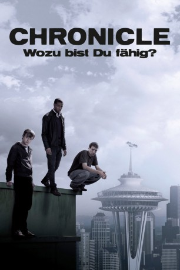

#2065 Chronicle - Wozu bist du fähig?
Alternativ: Chronicle
 
 IMDB-Wertung: 7.1 / 10
IMDB-Wertung: 7.1 / 10  Metascore: 69
Metascore: 69 
Loser Andrew, sein smarter Cousin Matt und Sonnyboy Steve sind beste Freunde an der Highschool. Andrew hat immer eine Videokamera dabei und filmt auch das Innere einer Höhle, das die drei erkunden. Nach dem Kontakt mit der darin lebenden riesigen Kristallstruktur entwickeln die drei telekinetische Fähigkeiten. Sie haben ihren Spaß, Bälle, Legosteine und Chips in der Luft schweben zu lassen, und verschrecken Hausfrauen im Supermarkt und auf Parkplätzen. Ihre Fähigkeiten steigern sich, bis es Andrew übertreibt und aus Wut den Truck eines Rednecks mit seinen Kräften von der Straße in einen reißenden Fluss fegt.
Jahr: 2012
Dauer: 84 Minuten
FSK: 12
Land: USA Studio: 20th Century FoxTonspuren: DTS - ,
Untertitel: Deutsch,
Auflösung: 1080p (1920x1040) Größe: 9625 MB
Genre: Drama, Sci-Fi, Thriller
Regisseur: Josh Trank
Drehbuch: Max Landis, Max Landis, Josh Trank
Soundtrack:
Darsteller:
 Dane DeHaan als Andrew Detmer
Dane DeHaan als Andrew Detmer Alex Russell als Matt Garetty
Alex Russell als Matt Garetty Michael B. Jordan als Steve Montgomery
Michael B. Jordan als Steve Montgomery Michael Kelly als Richard Detmer
Michael Kelly als Richard Detmer- Ashley Hinshaw als Casey Letter
- Anna Wood als Monica
- Grant Powell als Howard
- Armand Aucamp als Austin
 Patrick John Walton als Park Ranger
Patrick John Walton als Park Ranger Joe Vaz als Michael Ernesto
Joe Vaz als Michael Ernesto- Allen Irwin als Redneck Trucker
- Francois Coetzee als Thug #3
 Matt Adler als Newscaster
Matt Adler als Newscaster Robert Clotworthy als Newscaster
Robert Clotworthy als Newscaster- Daisy Tormé als Karen Detmer
- Chrystee Pharris als Samantha
 Daniel Booko als Costly
Daniel Booko als Costly- Byron Thames als Howard
 Matt Nolan als Austin
Matt Nolan als Austin Ashley Peldon als School Flyer Girl
Ashley Peldon als School Flyer Girl Paul Pape als Priest
Paul Pape als Priest- Bo Petersen als Karen Detmer
- Rudi Malcolm als Wayne
- Luke Tyler als Sean
- Crystal-Donna Roberts als Samantha
 Adrian Collins als Costly
Adrian Collins als Costly- Nicole Bailey als Cala
- Lynita Crofford als Casey's Mom
- Royston Stoffels als Pharmacist
- Lance Elliot als Police Officer
- Nadine Suliaman als School Flyer Girl
- Pierre Malherbe als Police Detective
 Matthew Dylan Roberts als Ernesto's Neighbour
Matthew Dylan Roberts als Ernesto's Neighbour- Chelsea Nortje als Girl in Window
- Hendrik Kotze als Priest
- Charles L. Campbell als Pharmacist
- Popeye Vogelsang als Park Ranger
- Steve Kramer als Police Officer
- Jeff Fischer als Thug #3
- Vanessa Lee als Waitress , uncredited
Datei: X:\2012(A-F)\Chronicle - Wozu bist du fähig (2012, FSK12, 1920x1040).mkv seit 29.09.2015
Festplatte: HD 2012(A-M)
 Es gibt insgesamt 102 Filme in der Gruppe '2012(A-F)'
Es gibt insgesamt 102 Filme in der Gruppe '2012(A-F)'